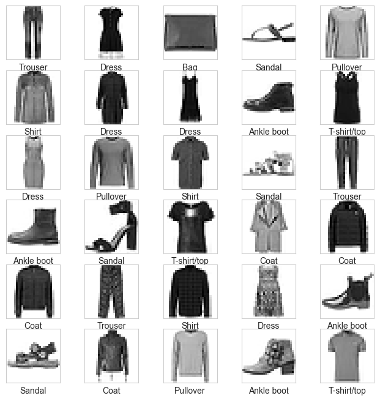
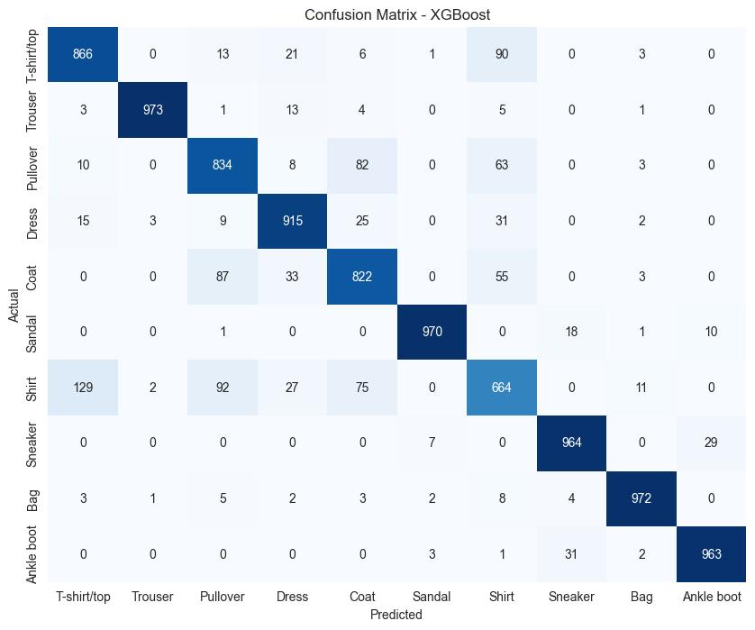
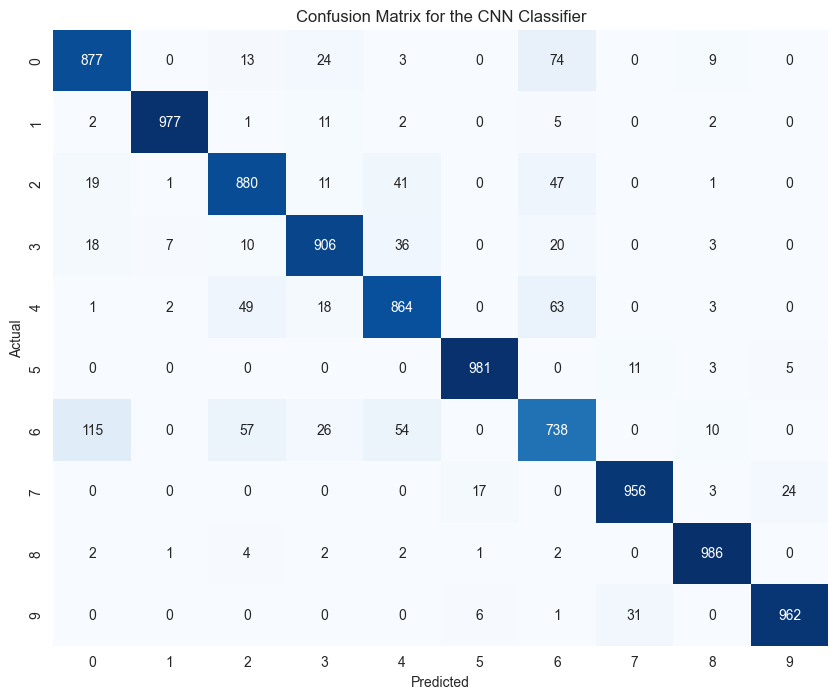
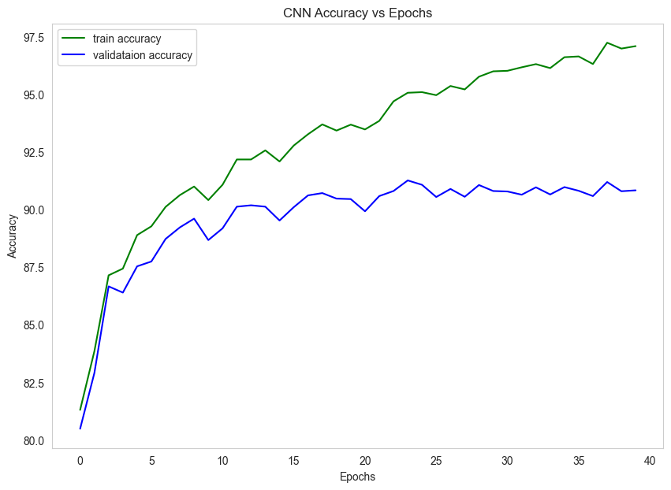
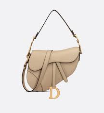
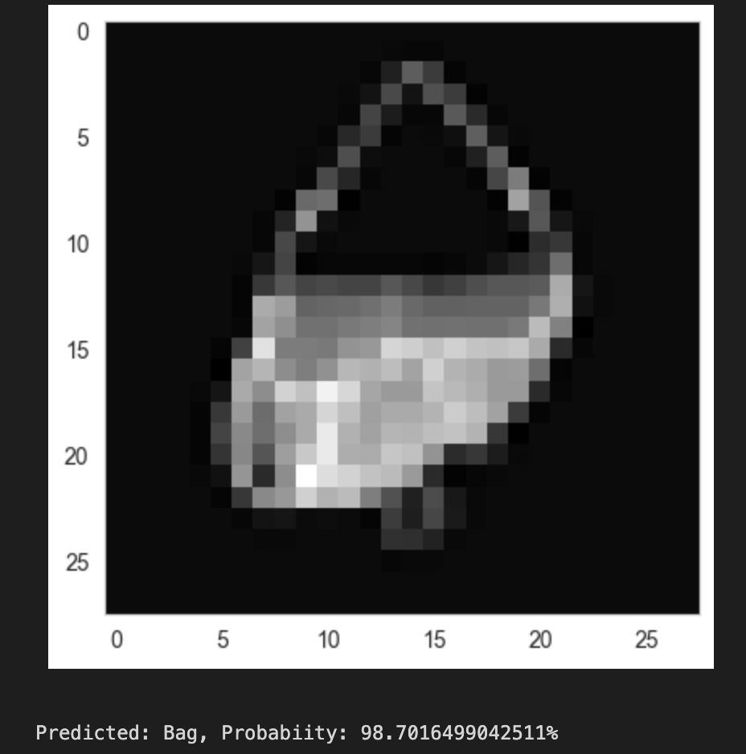

Welcome to the Fashion MNIST Image Classification Project. In this project, we explore the process of building an XGBoost and Convolutional Neural Network (CNN) using PyTorch to classify images from the Fashion MNIST dataset.
Abstract
This project dives into the architecture of the model, the training process, and interpretability using LIME. Whether you are a beginner in deep learning or looking to implement image classification, this tutorial will guide you through the steps to create an effective and interpretable model. Data mining, machine learning and deep learning are being extensively used in today’s world across various sectors like e-commerce, fashion, automobile industry and others. With enormous data available in the fashion industry, there has beena rapid increase in the usage of the data science technologies in fashion e-commerce to address several problems like clothing classification, recognition, and recommendations. This paper presents various approaches to perform clothing classification using the Fashion MNIST dataset. The study aims to classify the images into ten categories. In this paper, classical machine learning algorithms like XGBoost and Random Forest have been used as baseline models to perform the classification. Deep learning algorithms like Convolutional Neural Networks (CNN) are utilized to perform this image classification task. The paper also aims at the interpretability of these models predictions by using various methods including LIME and SHAP.
Model Outline
This project is centered on employing two methodologies:
1. XGBoost:
The XGBoost classifier is employed through the XGBoost library.Subsequently, hyperparameter tuning is
conducted using grid search cross-validation to obtain optimal parameters for the XGBoost classifier.
This comprehensive approach ensures the robustness and efficacy of the baseline model in the context of
the study.
2. CNN: The CNN model has been built based on the LeNet architecture. It has 5 layers - 2 convolutional
and 3 fully connected as shown below.
----------------------------------------------------------------
Layer (type) Output Shape Param #
================================================================
Conv2d-1 [100, 6, 28, 28] 156
ReLU-2 [100, 6, 28, 28] 0
AvgPool2d-3 [100, 6, 14, 14] 0
Conv2d-4 [100, 16, 10, 10] 2,416
ReLU-5 [100, 16, 10, 10] 0
AvgPool2d-6 [100, 16, 5, 5] 0
Linear-7 [100, 120] 48,120
ReLU-8 [100, 120] 0
Linear-9 [100, 64] 7,744
ReLU-10 [100, 64] 0
Linear-11 [100, 10] 650
================================================================
Total params: 59,086
Trainable params: 59,086
Non-trainable params: 0
----------------------------------------------------------------
Input size (MB): 0.30
Forward/backward pass size (MB): 11.11
Params size (MB): 0.23
Estimated Total Size (MB): 11.63
----------------------------------------------------------------
Training and Model Evaluation
Steps followed in the Training and Evaluation process:1. The data is split into train, test and validation sets where train set is used for model training, validation set is used for cross validating the trained model and test set for measuring model performance. The data has also been normalized using PyTorch which scales the input down to [0,1] for the CNN model.
2. To obtain the best hyperparameters of the model we have used GridSearch. GridSerach is a technique that attempts to find out the optimum values of the hyperparameters by searching exhaustinvely through a manually specified subset of hyperparameters
3. Using instanciated XGBoost and CNN models on the training dataset, training was carried out. While checking the accuracy on the test data to make sure that the loss is decreasing
4. After training the XGBoost Classifier and CNN model on the Fashion MNIST dataset the following results have been obtained.
For XGBoost,
Accuracy on training set - 98.6%
Accuracy on test set - 89.43%
For CNN,
Accuracy on training set - 95.07%
Accuracy on test set - 91.26%
The accuracy has also been evaluated for each class using CNN and below are the results:
T-shirt/Top: 87.70% Pullover: 88.00%
Coat: 86.40% Shirt: 73.80%
Bag: 98.60% Trouser: 97.70%
Dress: 90.60% Sandal: 98.10%
Sneaker: 95.60% Ankle Boot: 96.20%



To validate the real-world applicability of our findings, an out-of-sample image sourced from Google was subjected to CNN. The CNN, being a more complex and adaptive architecture, demonstrated for CNN superior performance, reaffirming its robustness in handling diverse and nuanced visual patterns.
 Conclusion
In the exploration of the Fashion MNIST dataset, a comparative study between Convolutional Neural
Networks (CNN) and XGBoost has unveiled intriguing insights into their performance. After observing the
performance of two models, it is clear that CNN outperforms XGBoost.
To validate the real-world applicability of our findings, an out-of-sample image sourced from Google was
subjected to CNN. The CNN, being a more complex and adaptive architecture, demonstrated superior
performance, reaffirming its robustness in handling diverse and nuanced visual patterns.
Classes such as 't-shirt/top,' 'pullover,' and 'shirt' exhibited lower accuracy. This trend prompted a
deeper investigation into the interpretability of model decisions.
The human intuition that these classes share similar shapes was validated through advanced
interpretability tools such as SHAP and LIME.
The future work is to focus on refining the model to better differentiate between certain classes with
lower accuracy, notably 't-shirt/top,' 'pullover,' and 'shirt.' This effort aims to enhance the model's
precision within these specific categories, contributing to an overall improvement in classification
accuracy..
There ain't no such thing as a free lunch”
— David Wolpert and William Macready
Thank you for joining us on this journey. If you have any questions or comments, email us at parimi@tamu.edu.